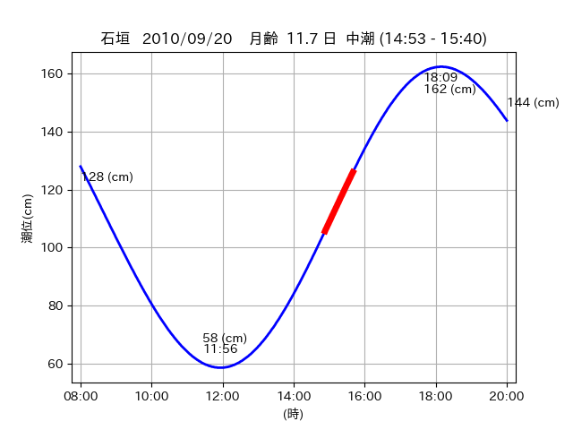

<!DOCTYPE html>
<html>
<head>
    
    <meta http-equiv="content-type" content="text/html; charset=UTF-8" />
    
        <script>
            L_NO_TOUCH = false;
            L_DISABLE_3D = false;
        </script>
    
    <style>html, body {width: 100%;height: 100%;margin: 0;padding: 0;}</style>
    <style>#map {position:absolute;top:0;bottom:0;right:0;left:0;}</style>
    <script src="https://cdn.jsdelivr.net/npm/leaflet@1.9.3/dist/leaflet.js"></script>
    <script src="https://code.jquery.com/jquery-3.7.1.min.js"></script>
    <script src="https://cdn.jsdelivr.net/npm/bootstrap@5.2.2/dist/js/bootstrap.bundle.min.js"></script>
    <script src="https://cdnjs.cloudflare.com/ajax/libs/Leaflet.awesome-markers/2.0.2/leaflet.awesome-markers.js"></script>
    <link rel="stylesheet" href="https://cdn.jsdelivr.net/npm/leaflet@1.9.3/dist/leaflet.css"/>
    <link rel="stylesheet" href="https://cdn.jsdelivr.net/npm/bootstrap@5.2.2/dist/css/bootstrap.min.css"/>
    <link rel="stylesheet" href="https://netdna.bootstrapcdn.com/bootstrap/3.0.0/css/bootstrap-glyphicons.css"/>
    <link rel="stylesheet" href="https://cdn.jsdelivr.net/npm/@fortawesome/fontawesome-free@6.2.0/css/all.min.css"/>
    <link rel="stylesheet" href="https://cdnjs.cloudflare.com/ajax/libs/Leaflet.awesome-markers/2.0.2/leaflet.awesome-markers.css"/>
    <link rel="stylesheet" href="https://cdn.jsdelivr.net/gh/python-visualization/folium/folium/templates/leaflet.awesome.rotate.min.css"/>
    
            <meta name="viewport" content="width=device-width,
                initial-scale=1.0, maximum-scale=1.0, user-scalable=no" />
            <style>
                #map_68a66e8180316f8852c164051c176d32 {
                    position: relative;
                    width: 2048.0px;
                    height: 1600.0px;
                    left: 0.0%;
                    top: 0.0%;
                }
                .leaflet-container { font-size: 1rem; }
            </style>
        
</head>
<body>
    
    
            <div class="folium-map" id="map_68a66e8180316f8852c164051c176d32" ></div>
        
</body>
<script>
    
    
            var map_68a66e8180316f8852c164051c176d32 = L.map(
                "map_68a66e8180316f8852c164051c176d32",
                {
                    center: [24.482, 123.82],
                    crs: L.CRS.EPSG3857,
                    ...{
  "zoom": 12,
  "zoomControl": true,
  "preferCanvas": false,
}

                }
            );

            

        
    
            var tile_layer_5341a8fa83185cb9756080cd3f8cb579 = L.tileLayer(
                "https://cyberjapandata.gsi.go.jp/xyz/seamlessphoto/{z}/{x}/{y}.jpg",
                {
  "minZoom": 0,
  "maxZoom": 18,
  "maxNativeZoom": 18,
  "noWrap": false,
  "attribution": "\u5730\u7406\u9662\u5730\u56f3",
  "subdomains": "abc",
  "detectRetina": false,
  "tms": false,
  "opacity": 1,
}

            );
        
    
            tile_layer_5341a8fa83185cb9756080cd3f8cb579.addTo(map_68a66e8180316f8852c164051c176d32);
        
    
            var marker_006bebf92fdefc92b6f06544063e2556 = L.marker(
                [24.4691, 123.8007],
                {
}
            ).addTo(map_68a66e8180316f8852c164051c176d32);
        
    
            var icon_d34e972f6571ecc12f59e5b19ec723b3 = L.AwesomeMarkers.icon(
                {
  "markerColor": "orange",
  "iconColor": "white",
  "icon": "info-sign",
  "prefix": "glyphicon",
  "extraClasses": "fa-rotate-0",
}
            );
        
    
        var popup_f78b82e561c1515c73db84cb100cc95a = L.popup({
  "maxWidth": "100%",
});

        
            
                var html_56ece6c1e71bed9fcf8df56bf7d0ab5e = $(`<div id="html_56ece6c1e71bed9fcf8df56bf7d0ab5e" style="width: 100.0%; height: 100.0%;"><table><tr><td></td></tr><tr><td><center>20100920 No.1 </center></table></td></tr></table</div>`)[0];
                popup_f78b82e561c1515c73db84cb100cc95a.setContent(html_56ece6c1e71bed9fcf8df56bf7d0ab5e);
            
        

        marker_006bebf92fdefc92b6f06544063e2556.bindPopup(popup_f78b82e561c1515c73db84cb100cc95a)
        ;

        
    
    
                marker_006bebf92fdefc92b6f06544063e2556.setIcon(icon_d34e972f6571ecc12f59e5b19ec723b3);
            
    
            var poly_line_27436298027d454aa477728d2e0cba3f = L.polyline(
                [[24.4691, 123.8007], [24.4784, 123.8018]],
                {"bubblingMouseEvents": true, "color": "#FF00FF", "dashArray": null, "dashOffset": null, "fill": false, "fillColor": "#FF00FF", "fillOpacity": 0.2, "fillRule": "evenodd", "lineCap": "round", "lineJoin": "round", "noClip": false, "opacity": 1.0, "smoothFactor": 1.0, "stroke": true, "weight": 3}
            ).addTo(map_68a66e8180316f8852c164051c176d32);
        
    
            var marker_9ba837ec75bd4e7de24a862f33cc111d = L.marker(
                [24.4822, 123.8145],
                {
}
            ).addTo(map_68a66e8180316f8852c164051c176d32);
        
    
            var icon_2d04a90c535ab860b9a161824b4a6594 = L.AwesomeMarkers.icon(
                {
  "markerColor": "orange",
  "iconColor": "white",
  "icon": "info-sign",
  "prefix": "glyphicon",
  "extraClasses": "fa-rotate-0",
}
            );
        
    
        var popup_372d05c947f6a8af033cd0c43c88f0bc = L.popup({
  "maxWidth": "100%",
});

        
            
                var html_c660aee890d95615b221f6e33f9e89e4 = $(`<div id="html_c660aee890d95615b221f6e33f9e89e4" style="width: 100.0%; height: 100.0%;"><table><tr><td></td></tr><tr><td><center>20100920 No.2 </center></table></td></tr></table</div>`)[0];
                popup_372d05c947f6a8af033cd0c43c88f0bc.setContent(html_c660aee890d95615b221f6e33f9e89e4);
            
        

        marker_9ba837ec75bd4e7de24a862f33cc111d.bindPopup(popup_372d05c947f6a8af033cd0c43c88f0bc)
        ;

        
    
    
                marker_9ba837ec75bd4e7de24a862f33cc111d.setIcon(icon_2d04a90c535ab860b9a161824b4a6594);
            
    
            var poly_line_3feb7ab0c85a4d9e3459ee69dbb1b06d = L.polyline(
                [[24.4822, 123.8145], [24.481, 123.8265]],
                {"bubblingMouseEvents": true, "color": "#00FFFF", "dashArray": null, "dashOffset": null, "fill": false, "fillColor": "#00FFFF", "fillOpacity": 0.2, "fillRule": "evenodd", "lineCap": "round", "lineJoin": "round", "noClip": false, "opacity": 1.0, "smoothFactor": 1.0, "stroke": true, "weight": 3}
            ).addTo(map_68a66e8180316f8852c164051c176d32);
        
</script>
</html>